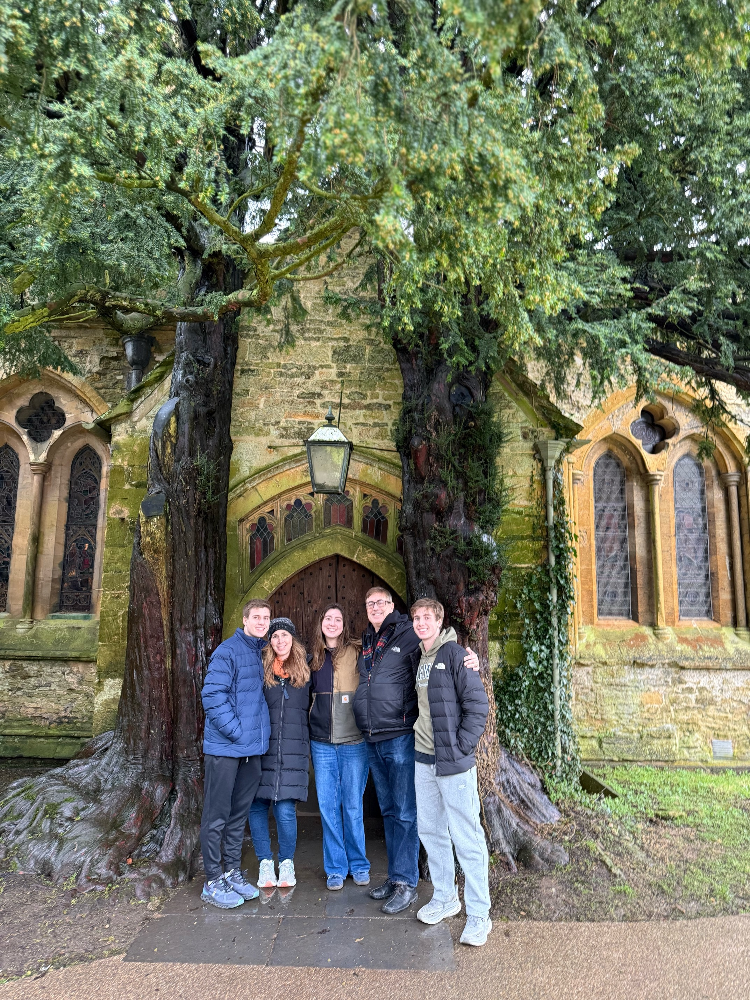

University of Georgia
4.0 GPA with scholarship-backed performance consistency.

My name is Zachary Teichman, and I am a student at the University of Georgia pursuing Finance and Real Estate. I am interested in business, investing, and learning how companies are evaluated in real-world settings.
Through my experience with Cogent Growth Partners, Corcoran Classic Living, and Orion Society, I have been able to build early exposure to deal sourcing, pitch work, and real estate markets. Those experiences have helped me better understand how research, communication, and preparation come together in professional environments.
On campus, I stay involved through organizations like Finance Society, Dean William Tate Society, Habitat for Humanity, Aces for Athens, and other groups that have helped me grow both professionally and personally.
I also previously served as a head coach for East Marietta Basketball, which gave me early experience leading younger players, communicating clearly, and managing responsibility in a team setting.
Outside of academics and work, I am a big Atlanta Hawks and New York Giants fan, played varsity tennis in high school, enjoy movies, and have recently been getting into cooking.
4.0 GPA with scholarship-backed performance consistency.
Recognition tied to academic performance and merit-based achievement.
Understanding the drivers behind quality, growth, and risk.
Most interested in how analysis, valuation, and execution come together in live situations.
Dean William Tate Society
The Dean William Tate Society recognizes the top 24 first-year students each year who have made a contribution to the University of Georgia community through academic excellence and extracurricular involvement.
Acceptance into the Tate Society is recognized as the highest honor a first year can receive at the University of Georgia.
Interest
Big fan of both and always following the season closely.
Played varsity tennis in high school and still enjoy the competitive side of it.
Another way I stay competitive and active on campus.
I am a big movie person, I am getting into cooking, and buffalo chicken is always a good idea.
Participation on Campus
Attend weekly events and speaker sessions focused on investment banking, asset management, and corporate finance.
Explore how strategy, operations, and commercial decision-making show up across sports organizations.
Participate in workshops, chapter events, and semester-long group work focused on professional development and communication skills.
Worked with a team on transaction pitch material and presentation work through a student-led M&A setting.
Contribute to service projects that support affordable housing through build work and volunteer coordination.
Help lead weekly tennis instruction for younger students while building community through sport.